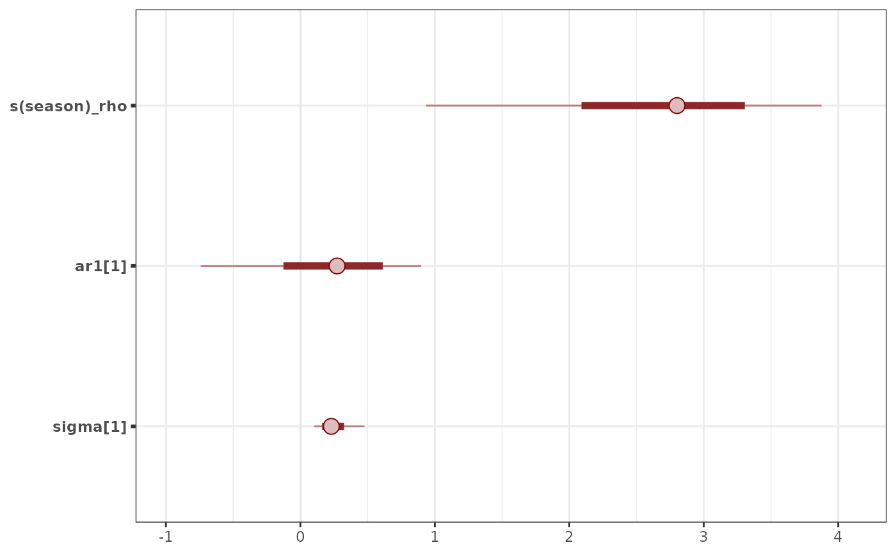
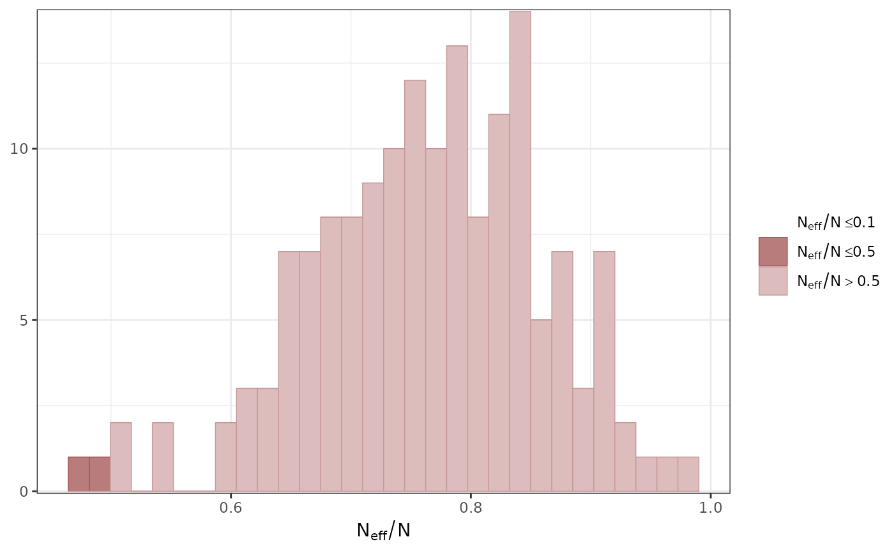
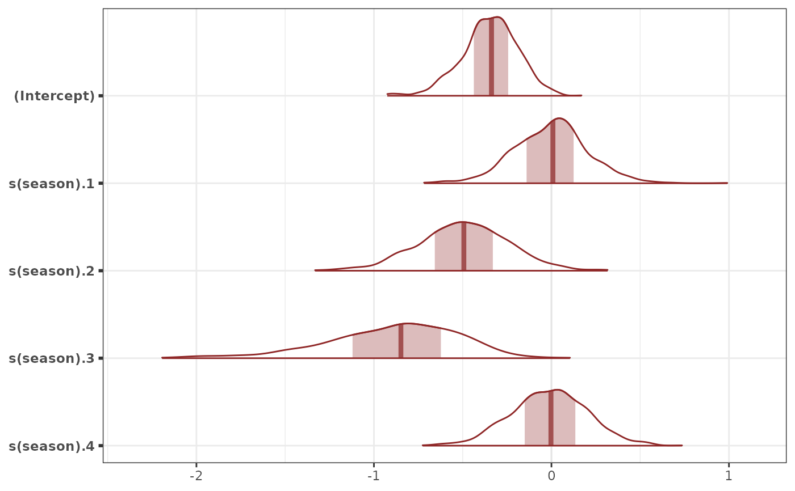
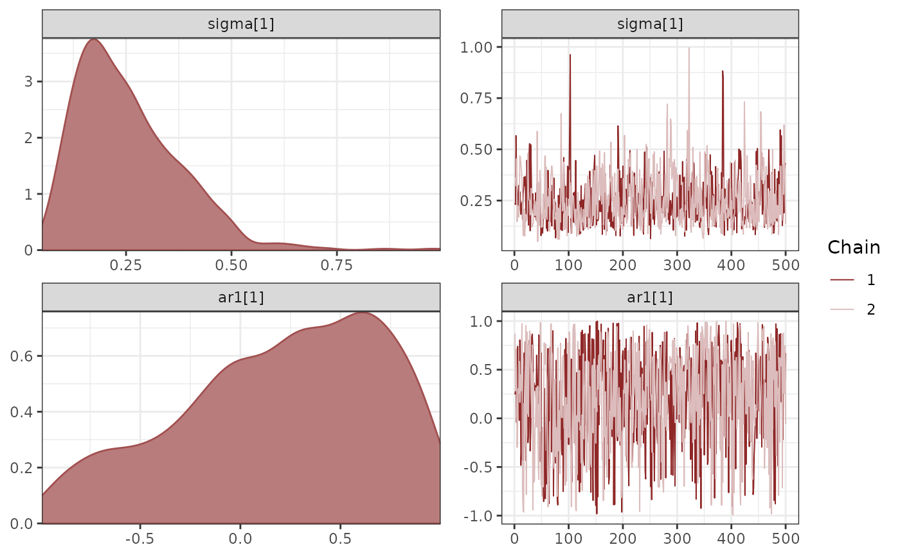

MCMC plots of mvgam parameters, as implemented in bayesplot
Source:R/mcmc_plot.mvgam.R
mcmc_plot.mvgam.RdConvenient way to call MCMC plotting functions implemented in the bayesplot package for mvgam models
Usage
# S3 method for class 'mvgam'
mcmc_plot(
object,
type = "intervals",
variable = NULL,
regex = FALSE,
use_alias = TRUE,
...
)Arguments
- object
An R object typically of class
brmsfit- type
The type of the plot. Supported types are (as names)
hist,dens,hist_by_chain,dens_overlay,violin,intervals,areas,areas_ridges,combo,acf,acf_bar,trace,trace_highlight,scatter,hex,pairs,violin,rhat,rhat_hist,neff,neff_histandnuts_energy. For an overview on the various plot types seeMCMC-overview.- variable
Names of the variables (parameters) to plot, as given by a character vector or a regular expression (if
regex = TRUE). By default, a hopefully not too large selection of variables is plotted.- regex
Logical; Indicates whether
variableshould be treated as regular expressions. Defaults toFALSE.- use_alias
Logical. If more informative names for parameters are available (i.e. for beta coefficients
bor for smoothing parametersrho), replace the uninformative names with the more informative alias. Defaults toTRUE- ...
Additional arguments passed to the plotting functions. See
MCMC-overviewfor more details.
Value
A ggplot object
that can be further customized using the ggplot2 package.
See also
mvgam_draws for an overview of some of the shortcut strings
that can be used for argument variable
Examples
# \donttest{
simdat <- sim_mvgam(n_series = 1, trend_model = AR())
mod <- mvgam(y ~ s(season, bs = 'cc', k = 6),
trend_model = AR(),
noncentred = TRUE,
data = simdat$data_train,
chains = 2,
silent = 2)
mcmc_plot(mod)

mcmc_plot(mod, type = 'neff_hist')
#> `stat_bin()` using `bins = 30`. Pick better value with `binwidth`.

mcmc_plot(mod, variable = 'betas', type = 'areas')

mcmc_plot(mod, variable = 'trend_params', type = 'combo')

# }